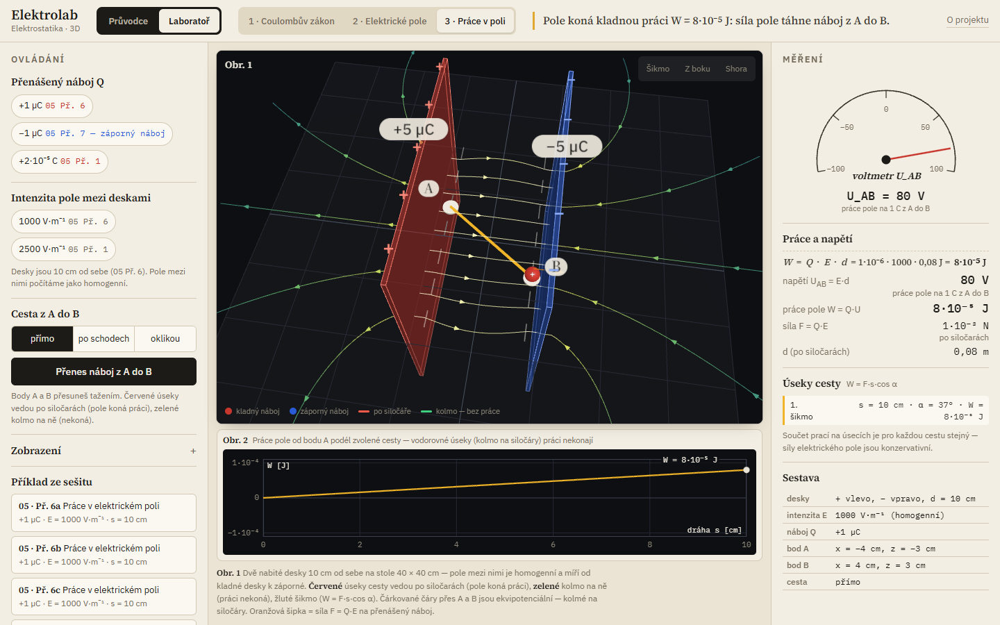
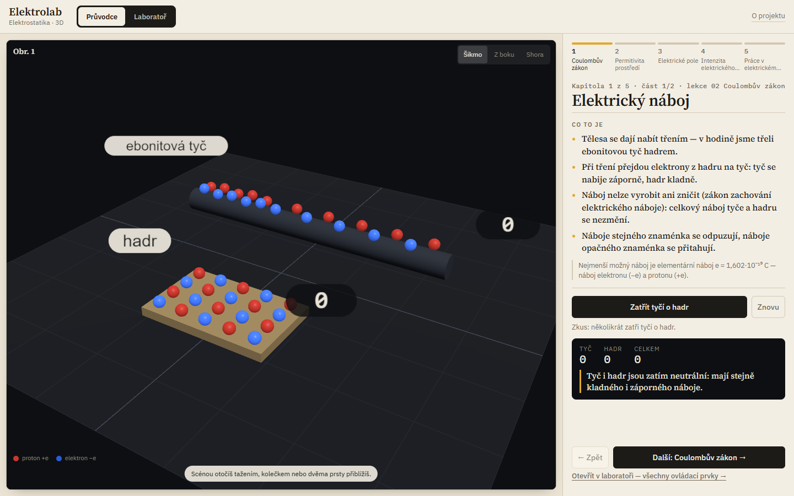
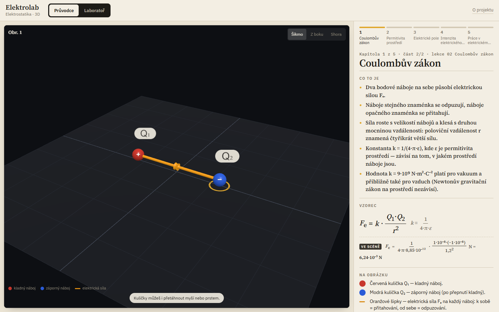
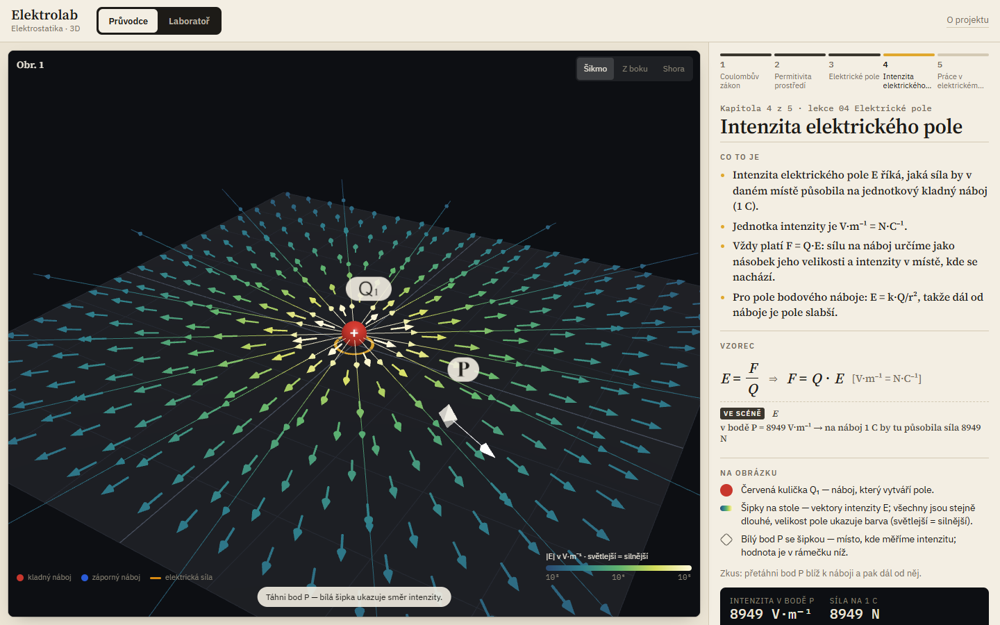
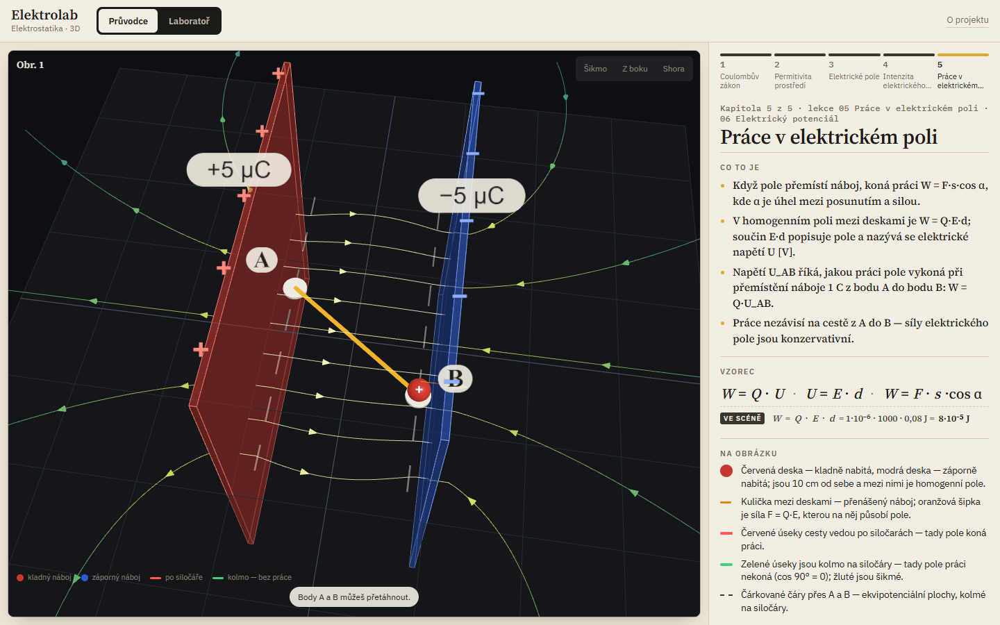

Průvodce
Pět kapitol v pořadí lekcí: náboj a Coulombův zákon, permitivita, elektrické pole, intenzita, práce v poli. U každé: co to je, vzorec a ovládání scény.
Případová studie · školní projekt · 2026
Elektrolab je 3D studijní pomůcka pro naši třídu na gymnáziu. Náboje, siločáry, intenzita a práce v poli — všechno, co je v sešitě jako vzorec, je tady jako scéna, se kterou si můžeš hrát. A každé číslo sedí se sešitem.

Elektrostatika je v sešitě jen vzorce a pár obrázků. Siločáry, intenzita nebo to, že práce v poli nezávisí na cestě, se na papíře špatně představují. První verze aplikace to sice ukazovala, ale na první pohled bylo na obrazovce patnáct ovládacích prvků a dva panely čísel — člověk nevěděl, kam se dívat.
Pět kapitol v pořadí lekcí: náboj a Coulombův zákon, permitivita, elektrické pole, intenzita, práce v poli. U každé: co to je, vzorec a ovládání scény.
Zadání z hodiny; řešení se ukáže až po kliknutí. Jedním tlačítkem se příklad postaví ve 3D scéně a vzorec nad ním se přepočítá s čísly ze scény.
Všechny ovládací prvky, grafy (Obr. 2 a 3), ručkový přístroj (siloměr, |E|, voltmetr), sestava pokusu a „Příklady ze sešitu“, které se porovnají s výsledkem v sešitě.




Pravidlo projektu: všechno musí odpovídat tomu, co jsme brali. Značky z hodiny (Q, r, Fₑ, E, W, U), Coulombův zákon ve tvaru z tabule Fₑ = 1/(4·π·ε)·Q₁·Q₂/r², desetinná čárka, jednotky V·m⁻¹. Každý „Příklad ze sešitu“ je zároveň automatický test — aplikace po zaokrouhlení musí ukázat přesně výsledek ze sešitu (např. 02 Př. 1 → 3 600 000 N, 03 Př. 6 → 4,9·10⁻³ N, 05 Př. 6 → 10⁻⁴ J).
75 automatických testů · 0 selhání
src/core/) a testovaná v Node (node --test).Doplním vlastními slovy.